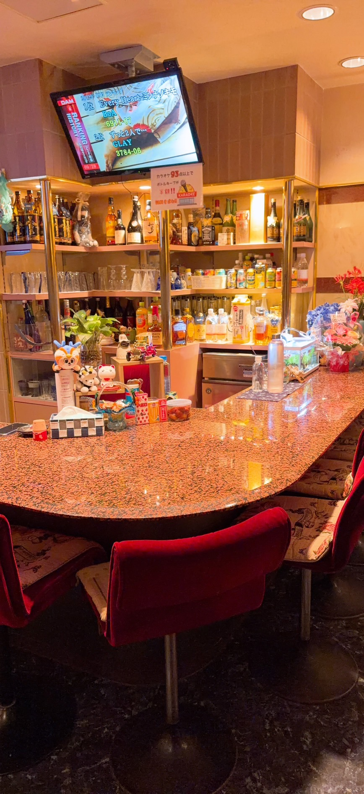
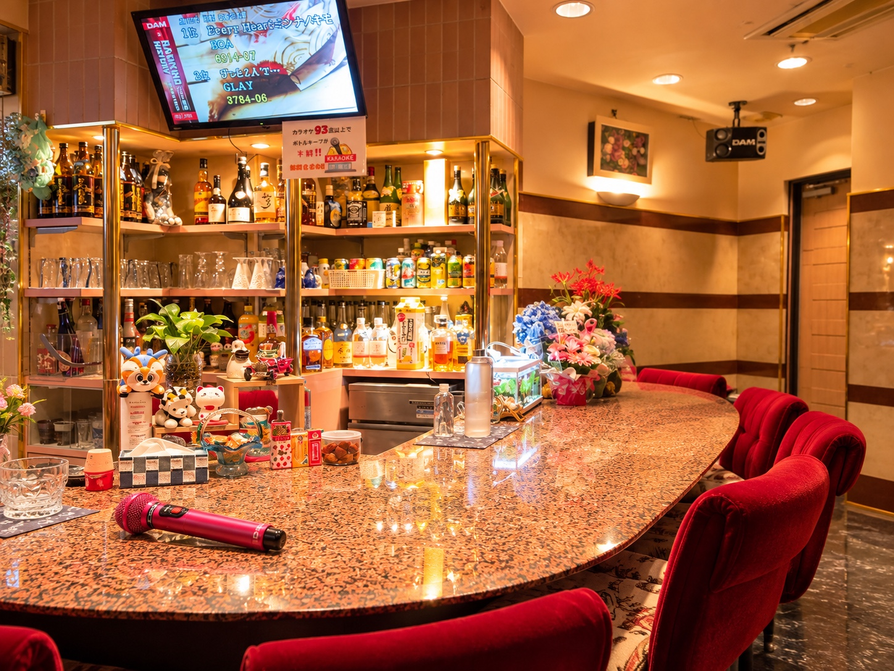
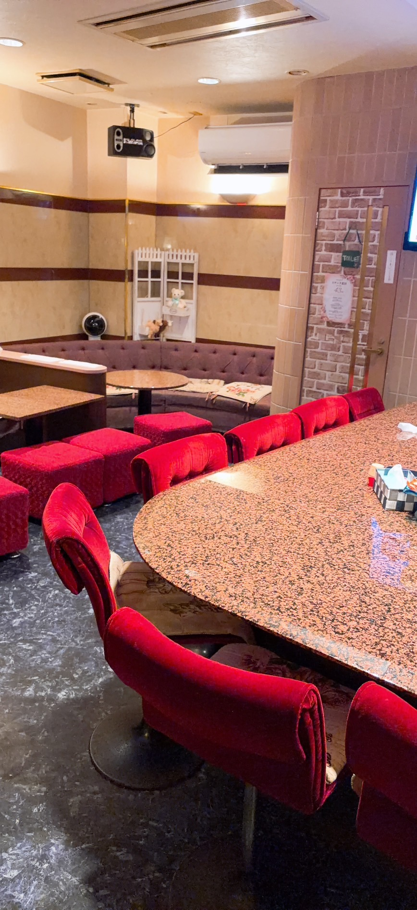
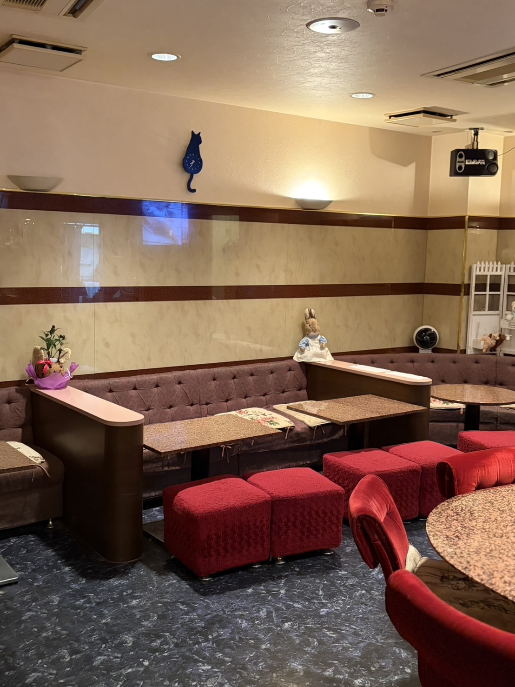
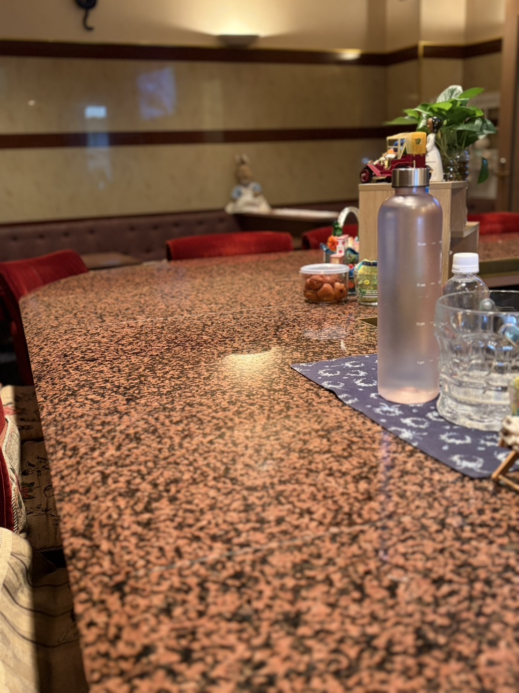
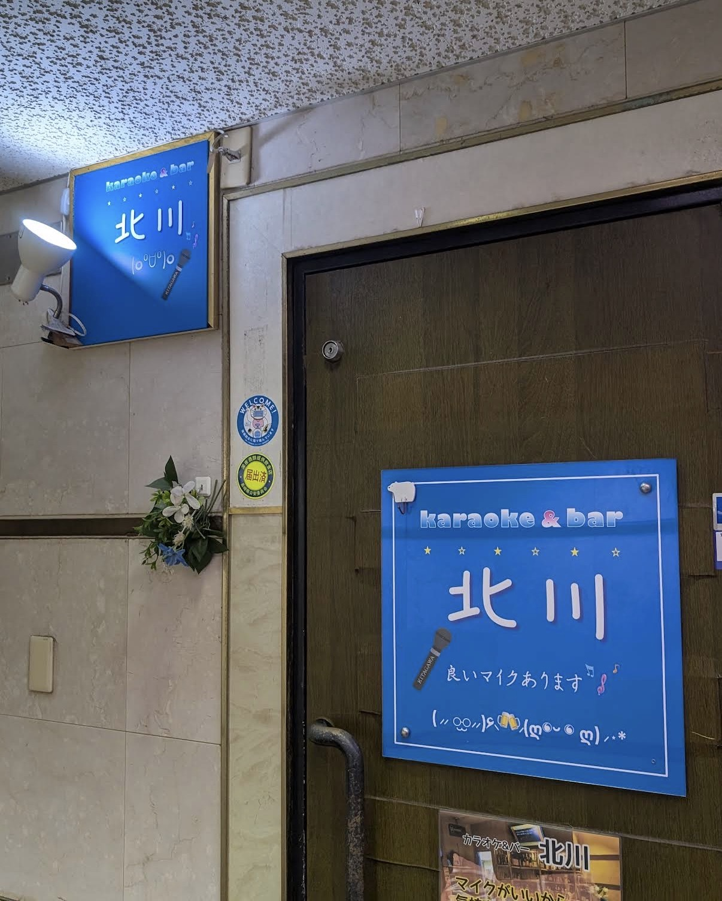

ABOUT KITAGAWA
人が集い、歌い、笑い合う。 銅座のあたたかな居場所。
スナック北川は、長崎市の繁華街・銅座で長く愛されてきた、 アットホームなカラオケスナックです。 思案橋エリアからも立ち寄りやすく、 初めての方も、おひとり様も、常連の方も、 肩ひじ張らずにゆっくりとした時間をお過ごしいただけます。
いつも明るく、お話好きなママ。 たくさんのお客様との出会いを大切に、 今日も元気にお店に立っています。 その温かな人柄こそ、スナック北川のいちばんの魅力です。
ママが笑顔でお待ちしています。
SYSTEM
長崎・銅座で気軽に楽しめる、2時間3,000円。
基本料金
※一部対象外のドリンクがあります
※延長は追加料金がかかります
KARAOKE
歌いたくなる、いいマイク。
DAMのワイヤレスマイクで、気持ちよく一曲。
懐かしの名曲から、みんなで楽しめる一曲まで。 北川では、カラオケも基本料金内でお楽しみいただけます。 音量は心地よく、会話も歌も楽しめる空間を大切にしています。

GALLERY
店内の雰囲気
赤い椅子と、大きなカウンター。 長年の時間が積み重なった、北川らしい落ち着いた空間です。




ACCESS
長崎市・銅座のスナック北川
長崎市の繁華街・銅座にあるスナック北川。 思案橋エリアからも立ち寄りやすく、 お仕事帰りはもちろん、長崎観光の夜にもおすすめです。
- 住所
- 長崎市銅座町8-6 プラティ銅座1F
- 営業時間
-
18:00〜23:00
※23:00以降はお客様の状況により営業 - 料金
-
2時間 3,000円
飲み放題＋歌い放題
